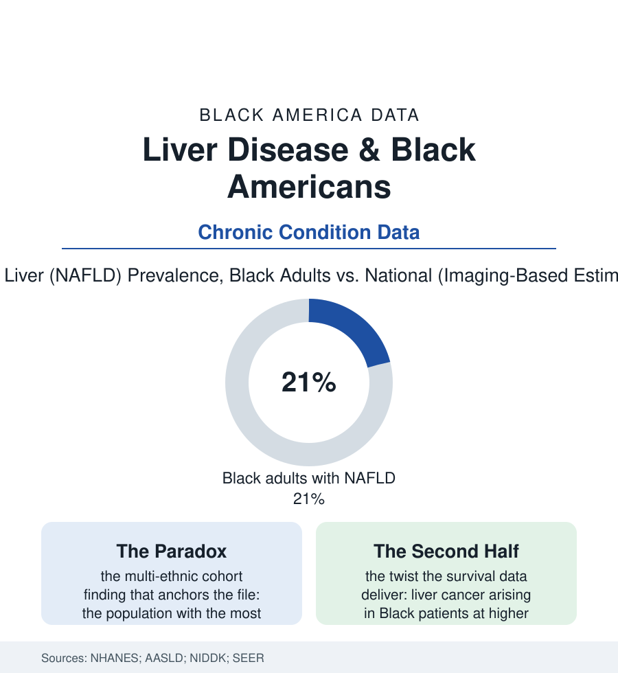

Black Public Health
The Liver Paradox: Fat, Fire, and the Organ That Keeps Secrets
Black Americans carry more diabetes and obesity yet less fatty liver in the imaging data — a genuine physiological puzzle with a darker second half. The liver file.

The liver file opens with a genuine scientific puzzle: the metabolic risk factors that fill the liver with fat in other populations — obesity, diabetes, the whole syndrome — are more prevalent among Black Americans, yet the imaging and elastography studies consistently find less fatty liver there. The paradox is real, instructive, and incomplete: the second half of the liver data runs in this section's usual direction. This article reads both halves.
The Protection and Its Mechanism
The multi-ethnic cohort studies (the liver-fat measurements by CT and MRI across thousands of participants, Black adults' hepatic fat fraction running lowest despite the highest diabetes rates in the same tables) forced the field to separate two things the clinic had fused: the fat in the body and the fat in the liver are different variables, and their correlation itself varies by ancestry. The genetic accounting in the literature points at the storage pathways' variants — the PNPLA3 risk allele's frequencies (highest in Hispanic ancestry, lowest in African) explaining a large share of the population pattern, the fat-distribution physiology of the body-composition file (the visceral-versus-subcutaneous partition differing in the same direction) — the Black metabolic profile storing its excess where it harms less, a protection written in allele frequencies rather than in virtue, which is the only kind of protection population science deals in. The clinical corollaries run both ways and the file records each: the fatty-liver screening scores calibrated on the higher-prevalence populations misjudging this one (the risk calculators' ancestry terms again — the recurring argument of this section, now in the liver's arithmetic), the lean-NAFLD rows, and the counseling error the paradox tempts (the clinician reassuring the Black patient with diabetes out of a liver vigilance the rest of the file forbids — because the paradox covers one disease of the organ, and the organ keeps others).
The Other Diseases of the Same Organ
The treatment era has just opened and arrives carrying the section's standard question: the first drug approvals for fatty-liver scarring in the recent regulatory record — metabolic agents repriced for the liver — enter a market whose trial populations, in the enrollment audits, underrepresent the very ancestry the paradox describes, so that the drug's performance in Black livers will be learned, as usual, from the pharmacy data of the patients prescribed it rather than the trials that approved it. The liver's specialists join the workforce file's thinnest rows in the same years (hepatology's fellowship demographics in the specialty data) — the organ's secrets kept, for now, by a profession still learning to staff for the population whose livers argue back.
The hepatitis file has its own article; the alcohol file its rows; what remains here is the cancer and the scar: liver cancer's incidence in the SEER data running higher in Black men than the national figure, its mortality the highest of the large groups — the presentation late in the imaging data (the surveillance ultrasounds for the known cirrhotic performed least in the patients the guidelines mark highest-risk in the adherence audits), the transplant file's liver chapter repeating the transplant article's whole grammar (the referral, the listing, the MELD score's own creatinine argument — the kidney file's equation haunting the liver's queue — the graft survival's slow equalization once the organ finally arrives). The fibrosis progression data add the file's last refinement: where fatty liver does occur in Black patients, the cohort studies argue over whether it scars faster — the protection possibly covering the fat but not the fire, the NASH rows small in number and consequential in course. The public-health ledger closes with the exposures the organ filters for the whole atlas: the alcohol file's consumption patterns (lower, on average — the liver's cirrhosis-by-alcohol rows correspondingly kinder), the hepatitis B vaccination's birth-cohort protection building in the child data, the medication and supplement rows of the pharmacy file (the herbal and bodybuilding products' liver injuries in the case registries — the unregulated shelf filtering through the same organ as everything else). The paradox stands, then, as this section's most elegant caution: a population can win the organ's most common disease and lose its deadliest, in the same tables, for entirely different reasons — the genes handling the fat, the system handling the rest.
Reading the Liver Data
The liver keeps the body's secrets longest and tells them latest, which is why its file is written in paradoxes. NHANES publishes the enzymes; the cohorts publish the images; SEER publishes the ending nobody's genes arranged. The protection is real. So is everything that walks around it.
More in Black Public Health
Hypertension Among Black Adults: Prevalence, Control, and Consequences
About 55 percent of Black adults have hypertension — the highest rate of any U.S. group. Prevalence, onset, control, and the stroke, heart, and kidney consequences in the data.
Diabetes Among Black Adults: Prevalence and Complications
Nearly one in five Black adults has diabetes, diagnosed or undiagnosed — and its complications fall with particular weight. The CDC data on prevalence, control, and outcomes.
Black Life Expectancy: The Gap at Birth and Its Causes
Black life expectancy at birth is about 73 years, roughly five years below the national figure — the summary measure of every health gap in this section. The CDC data.
Source: National Health and Nutrition Examination Survey (NHANES); American Association for the Study of Liver Diseases; National Institute of Diabetes and Digestive and Kidney Diseases; SEER cancer data.